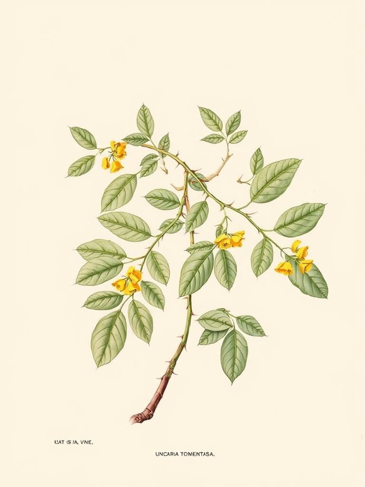
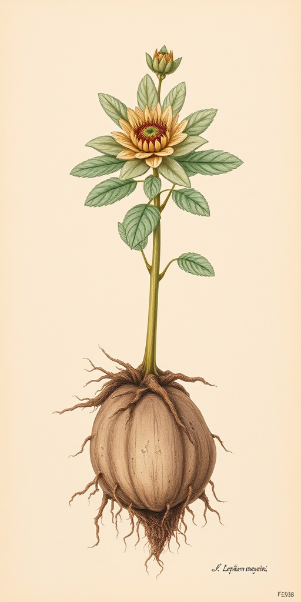
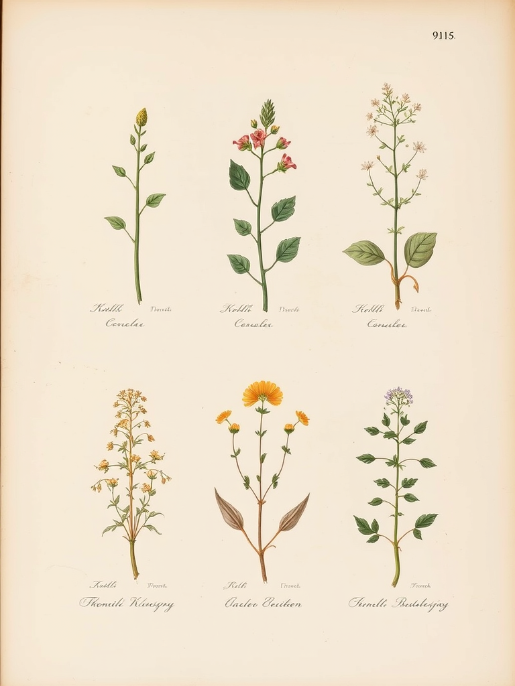
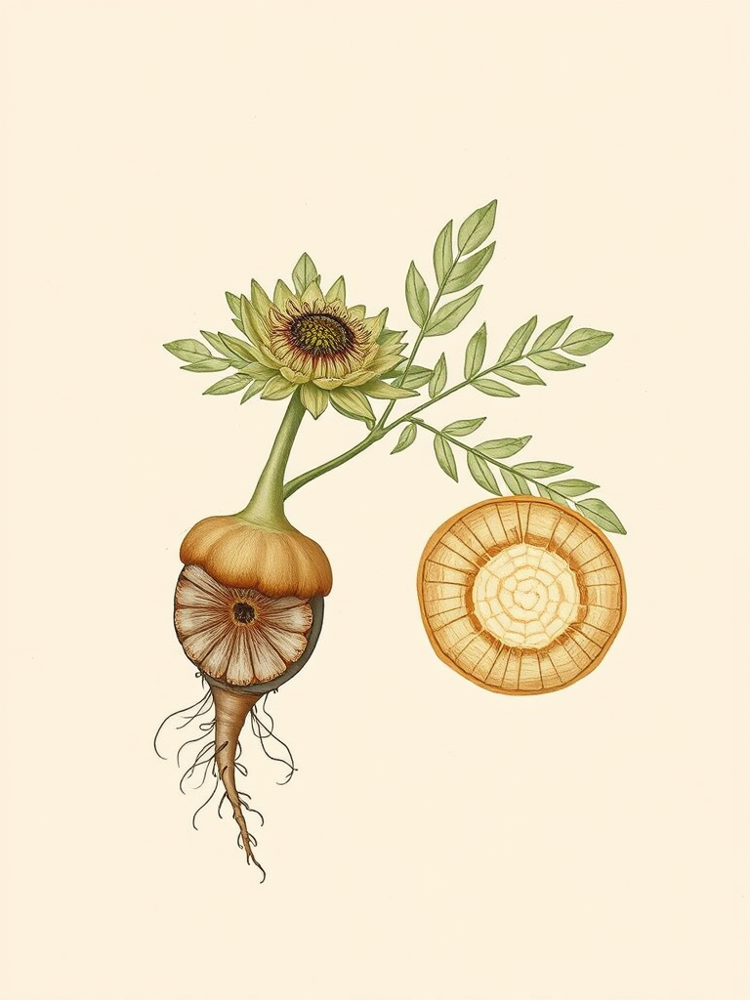
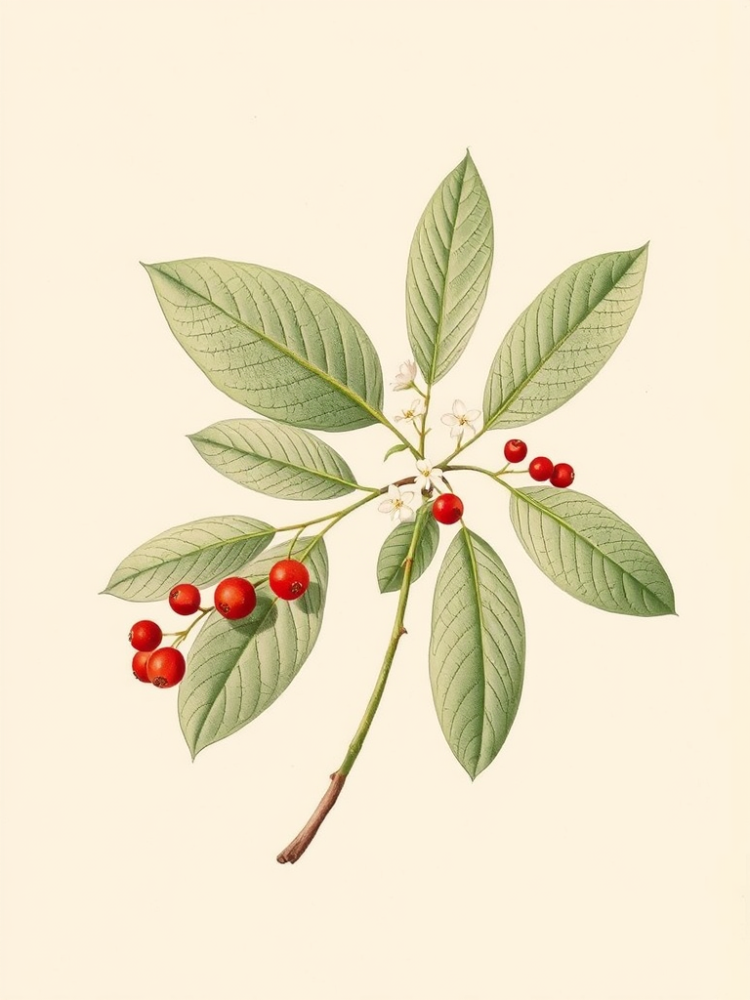
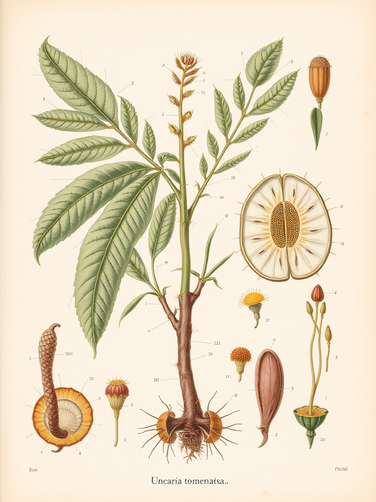
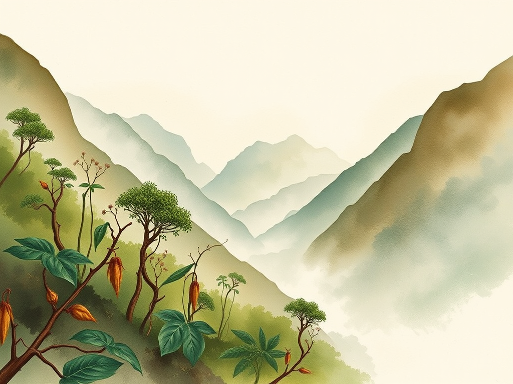

Gate G1: Operator Approval Required
5 layout variants for Yerbateca herb encyclopedia pages. All share the same aged-paper aesthetic (19th-century botanical atlas on #F0E8D8 cream). Illustrations generated locally with Flux.1-schnell on Mac Mini M4 Pro. Each variant shows Uncaria tomentosa (Uña de Gato) as the primary example.
Recommendation: C (Multi-specimen) for herb pages + E (Habitat) for section openers
Uncaria tomentosa
Uña de Gato
En las profundidades de la selva amazónica, donde los ríos trazan caminos de cobre entre la vegetación, los pueblos asháninka descubrieron hace siglos una liana que trepa hacia la luz con garras curvas como las de un felino. La llamaron samento, y la corteza de sus ramas se convirtió en uno de los remedios más venerados de la medicina tradicional peruana.
Liana trepadora leñosa que alcanza hasta 30 metros de longitud. Se distingue por sus espinas curvas en forma de gancho en los nudos del tallo, que le permiten aferrarse a los árboles del dosel. Las hojas son opuestas, ovadas, de 7-12 cm, con nervaduras prominentes.
Los alcaloides oxindólicos pentacíclicos (isopteropodina, mitrafilina, isomitrafilina) constituyen los principales compuestos activos. También contiene taninos, esteroles vegetales, y glucósidos del ácido quinóvico con propiedades antiinflamatorias documentadas.

Lepidium meyenii
Maca
A más de 4.000 metros sobre el nivel del mar, en las mesetas barridas por el viento de Junín, crece una pequeña crucífera que los incas consideraban un regalo del dios sol. La maca, con su raíz bulbosa enterrada en el suelo andino, ha alimentado a guerreros, pastores y sacerdotes durante al menos tres milenios.
Planta herbácea bienal de la familia Brassicaceae. Forma una roseta basal de hojas pinnadas que se extienden sobre el suelo. El hipocótilo engrosado (la "raíz") puede ser de color amarillo, rojo, negro o púrpura, según la variedad. Crece exclusivamente en altitudes entre 3.800 y 4.500 msnm.
Tradicionalmente utilizada como adaptógeno y tónico energético. Las comunidades andinas la consumen hervida o seca, y la consideran esencial para la fertilidad, la resistencia física y la adaptación a la altitud. Cada color de raíz se asocia con propiedades distintas.

Lámina XII — Plantae Medicinales Americanae
Las plantas medicinales de los Andes, representadas al estilo de los grandes atlas botánicos del siglo XIX, forman un tesoro vivo de conocimiento ancestral que la ciencia moderna apenas comienza a catalogar.
Uncaria tomentosa
Uña de Gato

Lepidium meyenii
Maca

Erythroxylum coca
Coca

Uncaria tomentosa — Vista anatómica
Uña de Gato
La corteza interior contiene al menos seis alcaloides oxindólicos: isopteropodina, pteropodina, isomitrafilina, mitrafilina, rincofilina e isorincofilina. Estos compuestos se concentran principalmente en la corteza interna del tallo y las raíces secundarias.
Corteza: La parte más utilizada en fitoterapia. Se recolecta de tallos maduros (mínimo 5 años) y se seca a la sombra para preservar los alcaloides activos.
Raíz: Contiene mayor concentración de alcaloides, pero su extracción daña la planta. Uso restringido en prácticas sostenibles.
Hojas: Menor concentración de compuestos activos, pero se preparan en infusión para uso cotidiano en comunidades amazónicas.

El bosque nublado de los Andes orientales — hábitat de Uncaria tomentosa
La uña de gato crece en los bosques tropicales húmedos de la cuenca amazónica, desde el sureste de Perú hasta el oeste de Brasil, pasando por Colombia, Ecuador y Bolivia. Prefiere altitudes entre 200 y 800 metros, donde la humedad relativa supera el 80% durante todo el año.
Se encuentra en bosques primarios y secundarios, trepando por los troncos de árboles del dosel superior. Las condiciones ideales incluyen suelos bien drenados, ricos en materia orgánica, y la sombra parcial que proporciona el estrato arbóreo. En los valles interandinos, donde la niebla envuelve la vegetación al amanecer, las lianas alcanzan su mayor vigor.
Este estilo de ilustración es ideal para páginas de categoría por región (Andes, Amazonía, Caribe, Mesoamérica) — establece el contexto geográfico antes de presentar las plantas individuales.
| Variant | Layout | Best for | Score | Notes |
|---|---|---|---|---|
| A | Full-page hero | Individual herb pages | 4.0 | Classic, clean. Plant fills top third. |
| B | Side illustration | Dense content pages | 4.1 | Asymmetric. Text wraps around plant. |
| C | Multi-specimen | Main herb pages | 4.4 ★ | Closest to reference image. Atlas plate feel. |
| D | Anatomical detail | Scientific/chemistry sections | 4.1 | Cross-sections, labeled parts. Köhler style. |
| E | Habitat landscape | Region/category pages | 3.9 | Atmospheric watercolor. Different mood. |
| Model | Flux.1-schnell via mflux 0.17.3 (no quantization) |
|---|---|
| Hardware | Mac Mini M4 Pro, MPS backend |
| Steps | 4 (schnell default) |
| Time | ~40s per 768×1024 image |
| Background | #F0E8D8 cream — seamlessly blends with page |
| Style | 19th-century Köhler atlas, watercolor + ink linework |
C (Multi-specimen) for main herb pages — most faithful to the 19th-century atlas style in the reference image. Individual plant illustrations within a multi-specimen grid create the old album feel.
E (Habitat) for section/category openers (regions, botanical families) — atmospheric, sets geographic context.
D (Anatomical) as supplementary illustrations within herb pages — adds scientific depth.
Quality can be further improved with Flux.1-dev (20-50 steps, ~5min/image) or botanical LoRAs from CivitAI. Current schnell output is already production-viable.
Gate G1 — awaiting operator approval to proceed with full Yerbateca production.